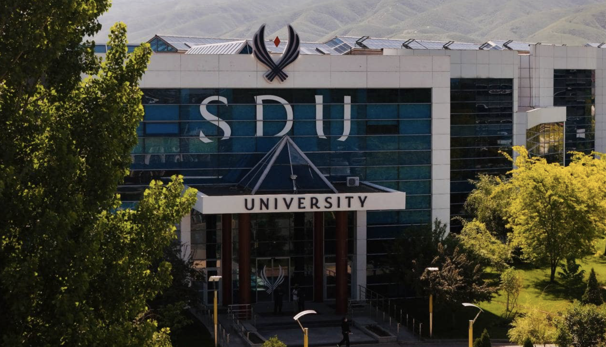

Университет Сулеймана Демиреля (SDU) — частное высшее учебное заведение в Казахстане, расположенное в городе Каскелен, Алматинская область. SDU University Основан 17 декабря 1996 года при участии Президента Казахстана Нурсултана Назарбаева и Президента Турции Сулеймана Демиреля, в честь которого университет получил своё имя. maeexpo.com
В СДУ действует трёхъязычная система обучения: большинство программ преподаются на английском языке, часть — на казахском и русском.

1. Профессионалы мирового уровня
2. Обучение на анлгийском языке
3. Больше чем просто университет
4. Современный Смарт кампус
5. Обмен студентами в 46 университетах со всего мира
6. Лидирующий IT университет. в Центральной Азии